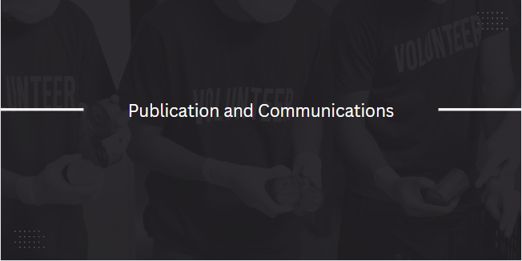

Raza, N., Kumar, M. & Mursaleen, M. Approximation with
Szász-Chlodowsky operators employing general-Appell polynomials. J Inequal Appl 2024, 26 (2024).
https://doi.org/10.1186/s13660-024-03105-5
Membership, Reviewer/Reviewer Board Member
Life Membership, Society of Special Functions and Applications, India
Get In Touch